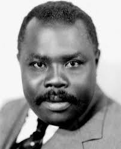

My
Personality
Traits, my hero and my thoughts on AI in school
- Trait 1
- Trait 2
- Trait 3
- Strong Willed
- Empathetic
- Calm Minded
Hobbies
- Video Gaming
- Swimming
- Watching Anime
Top 3 Traits
Having the ability to set your mind on something and focus on solely completing that task
My Hero

My Hero's Background: was a pioneering Jamaican Black nationalist and Pan-African leader who founded the Universal Negro Improvement Association (UNIA) to promote global Black unity, pride, and economic independence
Why they are my hero: His ability to inspire the people
"A people without the knowledge of their past history, origin and culture is like a tree without roots." The first National Hero
LLMs: A Tool, Not a Crutch
What the statement means to me
I believe that considering that the future is quickly approaching we have to use LLM's/ AI as a way to improve life for Humanity rather than treating it as something that will hinder our development as a species.
When, where and how I can use LLMs
1. I use AI primarily as a research/study tool to help me to understand concepts that I was unable to grasp at an earlier time.
Conclusion
I will make sure to use AI to further my understanding of topic and issues that I relatively far outside of my range of understanding.